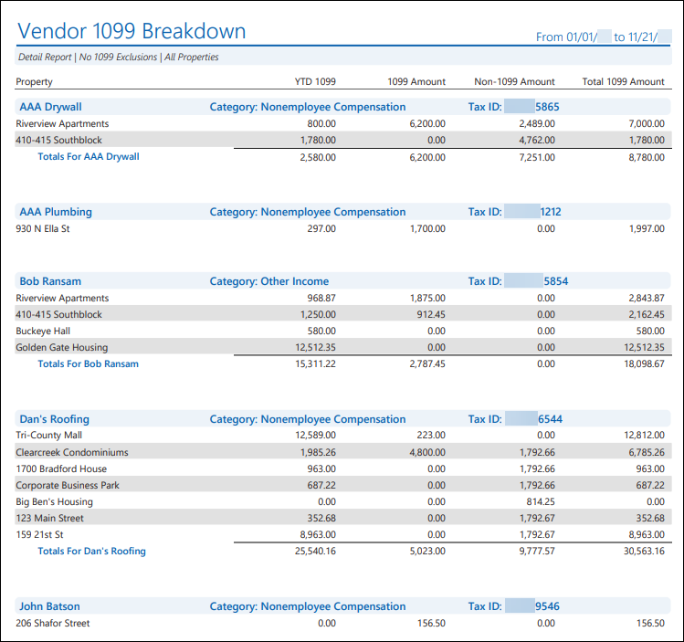
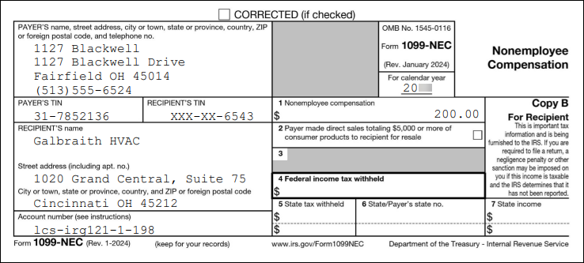

Source: https://rmxhelp.rentmanager.com/Topics/Express/KB/1099-Vendor-eFile.htm
Generate and Export Vendor 1099s
For property management companies filing on behalf of managed properties, you need to issue 1099 forms every year for the vendors who performed 1099 work at the properties you manage. Before you send these tax forms to the IRS, however, it is important to make sure the information is correct so that you don't have to file a corrected form later and risk any incurred penalties. You will also want to generate a copy to send to your vendors for their own records. As of 2023, per IRS regulations, if you have ten or more vendor 1099s, you must eFile the forms. You can efficiently create an electronic file to submit on the IRS FIRE website with Rent Manager's Export 1099 tool.
Related Privileges
| Group | Privilege | Column |
|---|---|---|
| Payables | Export 1099 | Enabled |
| Letter/Email Templates/Reports/Packets | Run reports | Enabled |
Additionally, on the Reports tab, you must have access to Vender 1099, Vendor 1099 Breakdown, and Vendor 1099 Copy B.
For more information, refer to Control User Access.
Warning
Before you begin, it's important to ensure that you have access to the properties and vendors for which you need to generate 1099 data. Rent Manager will only generate data for properties that you have access to and for vendors associated with those properties.
Step 1: Verify 1099 Amounts
An important first step in the annual tax process is to verify the income amounts on your vendor 1099s. The Vendor 1099 Breakdown report examines both 1099 and non-1099 payments you have made to vendors during the specified report date range. This provides a way for you to track and confirm your 1099 totals before generating and eFiling vendor 1099 reports.
To view the Vendor 1099 Breakdown report, do the following:
-
Go to
 arrow_forward Payables arrow_forward Vendor 1099 arrow_forward Vendor 1099 Breakdown.
arrow_forward Payables arrow_forward Vendor 1099 arrow_forward Vendor 1099 Breakdown.
The Reports: Vendor 1099 Breakdown page displays. -
Adjust the report options as desired. For more information, refer to Vendor 1099 Breakdown (Report).
More Information
The information you provide to your vendors must match what you submit to the IRS. Take note of the report options used here so you can use them when exporting 1099 data (as applicable) and to generate other 1099 reports.
Make note of the report options you use for the Owner 1099 Breakdown report, as the 1099 information you file and the 1099 copies you generate for your owners must match to ensure the correct data is being reported to the IRS.
-
Click Generate Report.

The report displays each vendor, the category of income the vendor has received (e.g., Nonemployee Compensation or Other Income) as defined by the IRS, and tax ID number. Below each vendor is a list of all the properties in their portfolio with the following information:
| Column | Description |
|---|---|
|
Property |
The name of each property that is associated with payments you made to a vendor. |
|
YTD 1099 |
The YTD 1099 Balance, which can be found on the vendor's details page in the Tax Information tile by clicking YTD Balances. |
|
1099 Amount |
The total dollar amount of payments made to the vendor where the 1099 box is checked on the linked bill. |
|
Non-1099 Amount |
The total dollar amount of payments made to the vendor where the 1099 box is not checked on the linked bill. |
|
Total 1099 Amount |
The total dollar amount of 1099 payments received by the vendor for each property row in the report using the following formula: Total 1099 = YTD 1099 + 1099 Amount |
More Information
The information that displays in this report is collected from your Rent Manager database. If any information is incorrect, you must resolve the error associated with the vendor(s) in Rent Manager. For more information, refer to Vendor 1099 Breakdown (Report).
If you forgot to mark all of your payments to 1099 vendors as 1099 expenses, you can use the Vendor 1099 Adjustment Tool to quickly see all payments made to each of your vendors and make your corrections in seconds. For more information, refer to Vendor 1099 Adjustment Tool.
If you started using Rent Manager after January 1, or have fallen behind on your data entry, use the 1099 YTD Balances Tool to quickly input the balance of any missing transactions that should be included in the vendor's 1099 balance. For more information, refer to Enter Vendor 1099 YTD Balances.
Step 2: Export Vendor 1099s
After double-checking that all your vendor information is correct and up-to-date, you can create a file using the Export 1099 tool that you can then upload to the Filing Information Returns Electronically (FIRE) system, which requires a Transmitter Control Code (TCC) issued by the IRS.
More Information
As of 2023, per IRS regulations, if you have ten or more vendor 1099s, you must eFile the forms. For more information, refer to https://www.irs.gov/e-file-providers/filing-information-returns-electronically-fire.
If you have fewer than ten 1099s and wish to file manually, you can generate the Vendor 1099 and Vendor 1096 reports to file. For more information, refer to Vendor 1099 (Report) or Vendor 1096 (Report).
To export your vendor 1099 forms, go to  arrow_forward Payables arrow_forward General arrow_forward Export 1099. For more information, refer to Export Vendor 1099.
arrow_forward Payables arrow_forward General arrow_forward Export 1099. For more information, refer to Export Vendor 1099.
If you need to export corrected vendor 1099 forms, go to  arrow_forward Payables arrow_forward General arrow_forward Export Corrected 1099. For more information, refer to Export Corrected Vendor 1099.
arrow_forward Payables arrow_forward General arrow_forward Export Corrected 1099. For more information, refer to Export Corrected Vendor 1099.
Step 3: Generate 1099 Copies for your Vendors
You can generate the Vendor 1099 Copy B report in Rent Manager. This report creates both the 1099-MISC Copy B and the 1099-NEC Copy B forms without needing a preprinted form. For more information, refer to Vendor 1099 Copy B (Report).
Warning
Because the Copy B 1099s are not on official preprinted forms, they are intended solely for your vendors' records and cannot be substituted as a submission to the IRS. It is recommended that you refer to the official IRS publications and consult with your accountant to determine the proper methods to distribute these copies to their recipients.
To view the Vendor 1099 Copy B report, do the following:
-
Go to
arrow_forward Payables arrow_forward Vendor 1099 arrow_forward Vendor 1099 Copy B.
The Reports: Vendor 1099 Copy B page displays. -
Adjust the report options as desired, remembering these options should match the selections you made when generating the Vendor 1099 Breakdown and the options selected when exporting the 1099 data. For more information, refer to Vendor 1099 Copy B (Report).
-
Click Generate Report.
